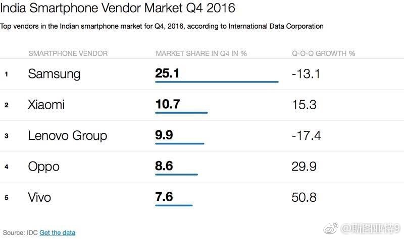

记录一下我文还是对巴萨是晋级热门的瞬间。去年我记录对拜仁是晋级热门的瞬间之后半个小时就悲剧了。现在估计离悲剧也就半个小时了……

斯图亚特9
2017-04-19
斯图亚特9
2017-04-19
华为不是走国际化路线吗？为什么在印度手机市场是小米、联想、OPPO、ViVo战三星？华为手机去哪了？
- 
斯图亚特9
2017-04-19
朝核问题的剧本每次都一模一样。结果肯定是朝鲜过几个月得寸进尺继续挑衅。感觉就是各国商量起来折腾一圈忽悠本国人民的。
@新浪新闻:
【美国称对朝鲜不设红线 将追求和平解决朝核问题】曾提出对朝“先发制人”打击论的美国突然态度放软。白宫发言人斯派塞17日说，特朗普总统不会在朝核问题上设定采取军事行动的“红线”。美国副总统彭斯在与安倍会谈时则对解决朝鲜问题摆出了和之前截然不同的态度↓↓
 彭斯抵日本 称对朝将不设红线和平解决朝核问题
彭斯抵日本 称对朝将不设红线和平解决朝核问题